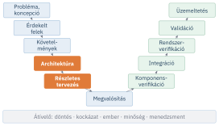
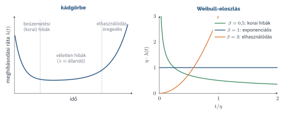
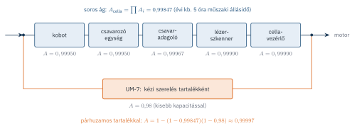
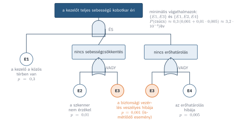
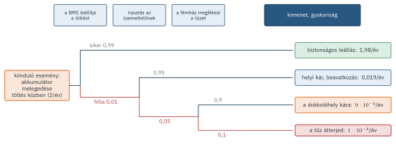
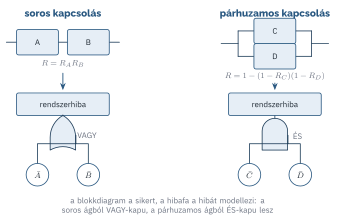

A fejezet feldolgozása után képes leszel:
- definiálni a megbízhatósági függvényt, a meghibásodási rátát és a kádgörbe szakaszait;
- számolni az exponenciális eloszlással, és értelmezni a Weibull-eloszlás alakparaméterét;
- megkülönböztetni az MTTF, MTBF és MTTR mutatókat, és rendelkezésre állást számolni;
- soros, párhuzamos és -ból- rendszerek megbízhatóságát meghatározni blokkdiagrammal;
- hibafát és eseményfát szerkeszteni, minimális vágathalmazokat keresni, és valószínűséget számolni;
- a modelleket egymásba alakítani, és felismerni a függetlenségi feltevés csapdáit.
A kockázatelemzés (14. fejezet) és az FMEA (15. fejezet) azonosítja, mi romolhat el. A megbízhatósági elemzés azt kérdezi, milyen valószínűséggel és milyen gyakran. Erre a követelményeknek is szükségük van: egy „a cella rendelkezésre állása legalább 98%” vagy „a biztonsági funkció veszélyes hibájának valószínűsége évente legfeljebb ” követelmény csak akkor tervezhető és verifikálható, ha a rendszert az elemei megbízhatóságából modellezni tudjuk.
A fejezet négy kérdésre épül:
- Hogyan írjuk le egy elem megbízhatóságát az időben?
- Mit jelent a rendelkezésre állás, és hogyan számoljuk?
- Hogyan következik a rendszer megbízhatósága az elemekéből?
- Hogyan modellezzük a hibák kombinációit és a következmények láncolatát?
16.1. A megbízhatóság alapfüggvényei
A megbízhatóság annak valószínűsége, hogy egy rendszer adott időtartamon át, adott feltételek mellett a követelményeknek megfelelően működik. Ha a meghibásodásig eltelő (véletlen) idő, akkor a megbízhatósági függvény és a hibavalószínűség:
A meghibásodási ráta annak a valószínűségnek az időegységre eső értéke, hogy a időpontig hibátlanul működő rendszer a következő pillanatban meghibásodik. A feltételes valószínűség definíciójából vezethető le (O’Connor és Kleyner 2012):
ahol a meghibásodási idő sűrűségfüggvénye (O’Connor és Kleyner 2012).
Sok műszaki rendszer meghibásodási rátája a kádgörbét követi (16.1. ábra): a beüzemelési szakaszban a rejtett gyártási hibák miatt a ráta magas és csökkenő, az üzemszerű szakaszban közel állandó (véletlen hibák), az öregedési szakaszban pedig a visszafordíthatatlan fizikai-kémiai folyamatok (kopás, kifáradás, korrózió) miatt növekvő.

Állandó meghibásodási ráta esetén a meghibásodásig eltelő idő exponenciális eloszlású. Ez az elektronikus rendszerekre a hasznos élettartam alatt jellemzően jó közelítés (O’Connor és Kleyner 2012):
Ha például egy gép átlagos működési ideje a meghibásodásig óra, akkor annak valószínűsége, hogy 500 óránál tovább üzemel, ; annak, hogy addig meghibásodik, . Az exponenciális eloszlás „emlékezet nélküli”: egy már 400 órája működő gép a következő 500 órát ugyanakkora valószínűséggel éli túl, mint egy új. Ez az öregedő alkatrészekre nyilvánvalóan nem igaz.
A Weibull-eloszlás mindhárom szakaszt leírja (Weibull 1951):
ahol a skálaparaméter (karakterisztikus élettartam), az alakparaméter. Ha , a ráta csökkenő (korai hibák), ha , állandó (exponenciális eset), ha , növekvő (elhasználódás). A gyakorlatban a Weibull-eloszlást meghibásodási adatokra illesztik, és értéke maga is diagnosztikai információ: megmutatja, hogy a hibákat gyártási, véletlen vagy kopási folyamatok okozzák-e, és így azt is, hogy a megelőző csere segít-e (O’Connor és Kleyner 2012).
16.2. Javítható rendszerek: MTTF, MTBF, MTTR, rendelkezésre állás
A legtöbb ipari rendszert meghibásodás után megjavítják. A javítható rendszerekre a következő átlagos időket szokás megkülönböztetni (O’Connor és Kleyner 2012):
- MTTFF (mean time to first failure): az első üzembe helyezéstől az első meghibásodásig eltelő átlagos idő;
- MTTF (mean time to failure): egy javítás végétől a következő meghibásodásig eltelő átlagos idő;
- MTTR (mean time to repair): a meghibásodástól a javítás végéig, az újbóli üzembe állásig eltelő átlagos idő;
- MTBF (mean time between failures): két meghibásodás között eltelő átlagos idő, .
A szakirodalom és a gyártói adatlapok a betűszavakat nem egységesen használják: sok helyen az MTBF a két hiba közötti átlagos működési időt jelenti. Egy adatlap értékét ezért mindig a definíciójával együtt kell átvenni.
Ha a meghibásodás és a javítás is exponenciális eloszlású (állandó meghibásodási és javítási rátával), a rendszer hosszú távon a ki nem esett idő meghatározott hányadában üzemképes. Ez a belső (inherens) rendelkezésre állás:
Ha egy gép átlagosan 100 óránként hibásodik meg, és a javítási ráta 1/óra ( óra), akkor . A belső rendelkezésre állás csak a javítás tényleges idejét veszi figyelembe; a gyakorlati (operatív) rendelkezésre állás a logisztikai és adminisztratív várakozást (alkatrészre, szerelőre várás) is tartalmazza, és ezért kisebb. A gyártásban a rendelkezésre állás az OEE egyik tényezője is (19. fejezet).
16.3. Soros, párhuzamos és vegyes rendszerek
A megbízhatósági blokkdiagram (reliability block diagram, RBD) a rendszer sikeres működésének logikai modellje: a rendszer akkor működik, ha a bemenettől a kimenetig vezet működő elemeken át út (IEC 2016). Független elemek esetén:
A soros rendszer csak akkor működik, ha minden eleme működik, ezért megbízhatósága kisebb a leggyengébb eleménél; a párhuzamos (redundáns) rendszer akkor működik, ha legalább egy eleme működik. Egy egyszerű számpélda ezt látványosan mutatja: ugyanabból az eszközből egyre többet sorba kötve a megbízhatósági függvény egyre gyorsabban csökken, párhuzamosan kötve egyre lassabban. A -ból- rendszer akkor működik, ha eleméből legalább működik; azonos, független elemekre a binomiális eloszlással számolható:
A rendelkezésre állásra ugyanezek a képletek érvényesek, ha az elemek egymástól függetlenül hibásodnak meg és javíthatók. Az összetett szerkezeteket alapkapcsolású részrendszerekre bontjuk, és ezek eredő értékeiből számolunk tovább.
A KoboCella termelési funkciójához öt elem soros működése kell. A beszállítói adatlapok és a csapat becslése szerint az MTBF és az MTTR: kobot 8000 és 4 óra, csavarozó egység 2000 és 1 óra, csavaradagoló 1500 és 0,5 óra, lézerszkenner 20 000 és 2 óra, cellavezérlő 30 000 és 3 óra. A soros ág rendelkezésre állása 0,99847, ami évi 3450 üzemórával mintegy 5 óra műszaki állásidőt jelent (16.2. ábra). A cella eredő meghibásodási rátája az elemek rátáinak összege, 1/óra, vagyis a cella átlagosan 727 óránként, évente mintegy 4,7-szer áll meg műszaki hiba miatt; egy 7,5 órás műszakot 0,99 valószínűséggel hiba nélkül teljesít.

A leromlott üzemmód (UM-7) párhuzamos ágként működik: ha a cella áll, a kézi szerelés folytatható. Ezzel a termelési funkció rendelkezésre állása 0,99997-re nő, de a kézi tartalék kisebb kapacitással dolgozik, ezért a ciklusidő-követelményt (R-01) leromlott üzemben nem teljesíti. A blokkdiagram tehát a funkció elérhetőségét mutatja, a teljesítményét nem. A legnagyobb hozzájárulás az állásidőhöz a kobottól és a csavarozó egységtől jön; a csapat a csavarozó egységhez tartalék orsót rendelt, amellyel az MTTR rövidebb lesz.
A párhuzamos redundancia számított előnye a valóságban gyakran kisebb. A blokkdiagrammal számított rendszer-megbízhatóság ezért irreálisan magas lehet (O’Connor és Kleyner 2012; Goldberg és mtsai. 1994, 3.5. szakasz). Ennek leggyakoribb oka a közös okú meghibásodás: ha a két redundáns elemet ugyanaz a tápellátás, ugyanaz a szoftver vagy ugyanaz a karbantartási hiba érinti, nem függetlenek, és a képlet túlbecsül. A redundáns ágakat ezért eltérő elvű, fizikailag elkülönített megoldásokkal érdemes kialakítani (diverzitás), ami a biztonsági rendszerek tervezésének egyik alapelve (17. fejezet).
Egy VárosiBringa-állomás tíz dokkolóhelyből áll, és a csapat úgy ítélte, hogy az állomás akkor teljesíti a funkcióját, ha legalább nyolc dokkoló működik. Egy dokkoló rendelkezésre állása 0,98. A 16.7. egyenlet szerint az állomás 0,999 valószínűséggel működik; ha mind a tíz dokkolóra szükség lenne, csak 0,82 valószínűséggel. A -ból- szemlélet így a követelmény megfogalmazására is hat: a „minden dokkoló működik” követelmény a gyakorlatban teljesíthetetlen, a „legalább nyolc dokkoló működik” viszont jól mérhető, és illeszkedik a felhasználók igényéhez.
16.4. Hibafa-elemzés
A hibafa-elemzés (fault tree analysis, FTA) egy kiválasztott nem kívánt eseményből, a csúcseseményből indul, és felülről lefelé, logikai kapukkal bontja le azokra az eseménykombinációkra, amelyek előidézhetik (Vesely és mtsai. 1981; IEC 2006). Az ÉS-kapu kimenete akkor következik be, ha minden bemenete bekövetkezik, a VAGY-kapué akkor, ha legalább egy. A legalsó szint alapeseményei az alkatrészhibák, emberi hibák és külső események, amelyekhez valószínűséget rendelünk. A hibafa legfőbb erőssége, hogy az egyidejűleg fennálló hibák valószínűségét is értékelni tudja; korlátja, hogy egyetlen, az elemző által előre megnevezett csúcseseményt vizsgál, és a teljes fák nagyon nagyok lehetnek (Vesely és mtsai. 1981; Ericson 2015; Goldberg és mtsai. 1994, 3.6. szakasz).
A hibafa minőségi eredménye a minimális vágathalmazok listája. Egy vágathalmaz olyan alapesemény-kombináció, amely együtt előidézi a csúcseseményt; minimális, ha egyetlen eleme sem hagyható el. Az egyelemű minimális vágathalmazok az egypontos hibák, amelyekre a tervezésnek különös figyelmet kell fordítania. Független alapesemények esetén a mennyiségi kiértékelés: az ÉS-kapu valószínűsége a bemenetek szorzata, a VAGY-kapué , kis valószínűségeknél jó közelítéssel az összeg (ritka esemény közelítés).
A PHA (14. fejezet) szerint a KoboCella legfontosabb biztonsági veszélye a kobotkar ütközése a kezelővel. A csapat hibafát szerkesztett arra a csúcseseményre, hogy a kezelőt teljes sebességű kobotkar éri (16.3. ábra). Ehhez három feltételnek kell együtt teljesülnie: a kezelő a közös térben van (E1), elmarad a sebességcsökkentés (a szkenner nem érzékel, E2, vagy a biztonsági vezérlés hibás, E3), és nem működik az erőhatárolás (E4 vagy ugyanaz az E3).

A minimális vágathalmazok: és . Az évi valószínűség (a szkenner és az erőhatárolás veszélyes, fel nem fedezett hibáira vonatkozó becslésekkel) , és ennek 95%-a az első vágathalmazból jön. Ha valaki a fát a kapuk szintjén, a független események képleteivel számolná, adódna, tizenhatszor kevesebb: az E3 ismétlődő esemény, ezért a két VAGY-kapu kimenete nem független. A tanulság a tervezésnek is szól: a biztonsági vezérlés közös pont a két védelmi rétegben, ezért a csapat a sebességfelügyeletet és az erőhatárolást független csatornára tervezte (17. fejezet).
16.5. Eseményfa-elemzés
Az eseményfa-elemzés (event tree analysis, ETA) a hibafával ellentétes irányban halad: egy kiinduló eseményből indul, és előre követi, hogyan alakul a folyamat attól függően, hogy az egymás után következő védelmi rétegek (gátak, biztonsági funkciók, emberi beavatkozások) működnek-e (IEC 2010). Minden réteg egy elágazás siker és hiba ágra, a végpontok a lehetséges kimenetek, gyakoriságuk a kiinduló esemény gyakoriságának és az ágak valószínűségének szorzata. Az eseményfa egyszerre dolgozik a siker és a hiba tartományában, és a végkimeneteket nem kell előre ismerni; korlátja, hogy egyetlen kiinduló eseményt vizsgál, és a részleges sikert nehezen tudja megkülönböztetni (Ericson 2015).
A kockázatelemzésben (14. fejezet) azonosított akkumulátorveszélyre a VárosiBringa csapata eseményfát készített (16.4. ábra). A kiinduló esemény egy akkumulátor rendellenes melegedése töltés közben; a teljes flottára évi két ilyen eseménnyel számoltak. Három védelmi réteg követi egymást: az akkumulátorkezelő rendszer (BMS) leállítja a töltést, a hőmérséklet-riasztás az üzemeltetőhöz fut be, és a fémház megfékezi a tüzet.

A legsúlyosabb kimenet, a tűz átterjedése a szomszédos kerékpárokra, évente gyakoriságú. Az eseményfa azt is megmutatta, hol a leghatékonyabb a beavatkozás: a BMS 0,99-es sikere a legerősebb réteg, de a riasztás és a fémház együtt további kétszázszoros csökkentést ad. Az egyes rétegek sikertelenségének valószínűségét a csapat külön hibafákkal becsülte meg, így a két módszer egymást egészítette ki.
16.6. A modellek kapcsolata
A blokkdiagram, a hibafa és az eseményfa ugyanannak a rendszernek különböző nézetei, és egymásba alakíthatók (Vesely és mtsai. 1981; IEC 2016; Goldberg és mtsai. 1994, 3.9. szakasz). A blokkdiagram a sikert, a hibafa a hibát modellezi: a soros blokkokból VAGY-kapu, a párhuzamos blokkokból ÉS-kapu lesz a hibák között (16.5. ábra). Az eseményfa egyes ágainak hibavalószínűsége hibafával számolható, a hibafa egy-egy alapeseménye pedig blokkdiagramból. Az átalakítás új információt nem ad, de segít abban, hogy az egyik módszer gyengeségét a másik erősségével ellensúlyozzuk.

A módszerek kiválasztásában a kérdés a döntő (16.1. táblázat).
| Kérdés | Módszer | Irány |
|---|---|---|
| Mekkora a rendszer megbízhatósága, rendelkezésre állása? | blokkdiagram | a sikerből, alulról felfelé |
| Milyen kombinációk vezetnek egy nem kívánt eseményhez, és mekkora valószínűséggel? | hibafa | a csúcseseményből, felülről lefelé |
| Mi következhet egy kiinduló eseményből a védelmi rétegektől függően? | eseményfa | a kiinduló eseményből, előre |
| Milyen hibamódok vannak, és mi a hatásuk egyenként? | FMEA (15. fejezet) | az elemekből, alulról felfelé |
A klasszikus megbízhatósági számítás alkatrész-adatbázisok és gyártói adatlapok rátáiból dolgozik (például a katonai elektronikai alkatrészekre kidolgozott meghibásodásiráta-modellekből). Az üzemelő rendszerekben ma egyre több a tényleges üzemi adat: a gépi naplók, a karbantartási rendszerek és az érzékelők alapján a Weibull-paraméterek folyamatosan frissíthetők, és a megbízhatóság az alkatrész tényleges állapotához köthető. Ez vezet az állapotalapú és előrejelző karbantartáshoz (25. fejezet), amelyben a cserét nem a naptár, hanem a romlás mértéke vezérli.
A soros és párhuzamos képletek, a hibafa kapuképletei és az eseményfa szorzatai mind függetlenséget feltételeznek. Ha egy esemény több ágban is szerepel (ismétlődő esemény), vagy a redundáns elemeknek közös okuk van (tápellátás, szoftver, karbantartó), a kapuszintű számítás nagyságrendekkel is tévedhet, és mindig a túl optimista irányba. A minimális vágathalmazokon alapuló számítás és a közös okú hibák külön vizsgálata a megoldás.
- A megbízhatóság annak valószínűsége, hogy a rendszer adott ideig megfelelően működik. A meghibásodási ráta időbeli alakja a kádgörbe: korai hibák, véletlen hibák, elhasználódás.
- Állandó rátánál az élettartam exponenciális eloszlású (, ). A Weibull-eloszlás alakparamétere megmutatja, melyik szakaszban vagyunk.
- Javítható rendszereknél az MTTF, az MTTR és az MTBF jellemzi a működést; a belső rendelkezésre állás .
- A blokkdiagramon a soros elemek megbízhatósága szorzódik, a párhuzamos elemek hibavalószínűsége szorzódik; a -ból- rendszer binomiálisan számolható. A redundancia hasznát a közös okú hibák csökkentik.
- A hibafa a csúcseseményből lefelé keresi a hibakombinációkat; eredménye a minimális vágathalmazok listája és a csúcsesemény valószínűsége. Az eseményfa a kiinduló eseményből előre követi a védelmi rétegek sikerét és kudarcát. A modellek egymásba alakíthatók.
- Egy alkatrész meghibásodási rátája állandó, 1/óra. Mennyi az MTTF, és mennyi a valószínűsége, hogy 1000 órát hiba nélkül működik?
- Három gép meghibásodásainak időpontja (óra): 1. gép 500, 1300, 2600, 4300, 6000; 2. gép 800, 1500, 3300, 5000, 7100; 3. gép 400, 1200, 2500, 4000, 5500. A javítási időt elhanyagolva mennyi az egyes gépek MTBF-je?
- Egy gép meghibásodásai között átlagosan 100 óra telik el, a javítási ráta 0,05 1/óra. Mennyi a rendelkezésre állása?
- Két 0,9 megbízhatóságú elem: mennyi a rendszer megbízhatósága sorosan és párhuzamosan?
- Mit jelent a Weibull-eloszlás alakparamétere, és milyen karbantartási következménye van?
- Miért adhat túl optimista eredményt a párhuzamos redundancia képlete?
- Mi a minimális vágathalmaz? Mit jelent, ha egy minimális vágathalmaz egyelemű?
- Miért nem szabad egy ismétlődő eseményt tartalmazó hibafát a kapuk szintjén, a független események képleteivel kiértékelni?
Megoldás
- óra; .
- Az utolsó meghibásodás időpontja osztva a hibák számával: 1. gép óra, 2. gép óra, 3. gép óra.
- óra, .
- Sorosan , párhuzamosan .
- A meghibásodási ráta az idővel növekszik (elhasználódás, kopás, kifáradás). Ilyenkor a megelőző csere egy alkalmas üzemidő után csökkenti a hibák számát; állandó rátánál () a megelőző csere nem segítene.
- Mert a képlet a redundáns elemek független meghibásodását feltételezi, a valóságban viszont közös okok (közös táp, szoftver, környezet, karbantartási hiba) egyszerre több ágat is kiejthetnek.
- Olyan alapesemény-kombináció, amely együtt előidézi a csúcseseményt, és egyik eleme sem hagyható el. Az egyelemű minimális vágathalmaz egypontos hiba: egyetlen esemény önmagában előidézi a csúcseseményt.
- Mert az ismétlődő eseményt tartalmazó ágak nem függetlenek; a kapuszintű képletek a közös eseményt többször, egymástól függetlenként veszik figyelembe, és ezért (ÉS-kapuknál) nagyságrendekkel alábecsülhetik a valószínűséget. A helyes számítás a minimális vágathalmazokból indul.
Saját fejlesztési feladatodhoz:
- készíts megbízhatósági blokkdiagramot a fő funkcióhoz, és becsüld meg a rendelkezésre állást adatlapok vagy becslések alapján (jelöld az adatok forrását);
- azonosítsd az egypontos hibákat, és vizsgáld meg, hol érdemes redundanciát vagy leromlott üzemmódot tervezni;
- a PHA legsúlyosabb veszélyére készíts hibafát, határozd meg a minimális vágathalmazokat, és értékeld a csúcsesemény valószínűségét;
- egy kiinduló eseményre készíts eseményfát a védelmi rétegekkel;
- használd a Gyakorlati útmutató blokkdiagram-, hibafa- és eseményfa-eszközlapját.
- O’Connor és Kleyner (2012): a megbízhatósági mérnökség gyakorlatias tankönyve.
- Vesely és mtsai. (1981): a hibafa-elemzés klasszikus kézikönyve, szabadon elérhető.
- IEC (2016), IEC (2006) és IEC (2010): a blokkdiagram, a hibafa és az eseményfa nemzetközi szabványai.
- Weibull (1951): a Weibull-eloszlás eredeti cikke.
- Goldberg és mtsai. (1994), 3.5–3.9. szakasz: a blokkdiagram, a hibafa, az eseményfa és átalakításaik gyakorlati leírása.